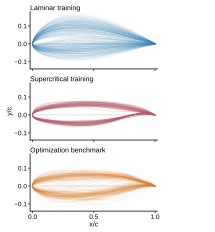
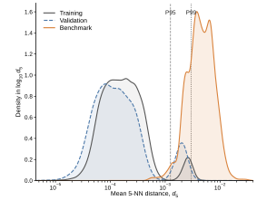
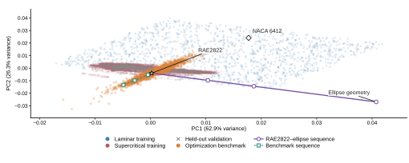
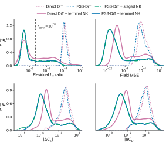
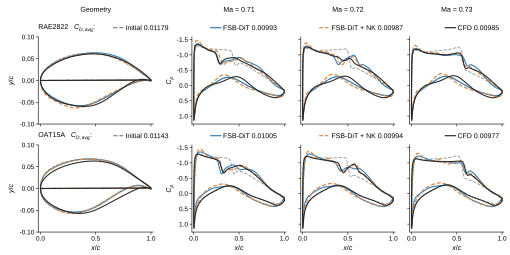

Tsinghua University · 2026
Reliable and efficient steady CFD from surrogate predictions through Newton-Krylov correction
1 School of Aerospace Engineering, Tsinghua University 2 State Key Laboratory of Advanced Space Propulsion, Tsinghua University * Corresponding author
Abstract
Neural surrogates can evaluate flow fields rapidly, but their reliability degrades under out-of-distribution geometries. We introduce a solver-coupled surrogate-Newton framework that treats a surrogate prediction as a high-quality initial state for Newton-Krylov correction. The learned model supplies global flow structure; the numerical solver supplies residual-based verification and terminal accuracy.
On an optimization-derived transonic airfoil benchmark, the framework reduces the median residual L2 ratio by more than seven orders of magnitude while lowering field and aerodynamic errors. In supercritical-airfoil optimization it improves online reliability with a 15.5-fold generation-level speedup over CFD, and the same principle extends to three-dimensional flying-wing configurations.
Method
Prediction supplies structure; the solver supplies acceptance.
Geometry and flow conditions are mapped to a complete steady-flow prediction. Instead of accepting that prediction directly, we inject it into the target CFD discretization and evaluate the native nonlinear residual.
Jacobian-free Newton-Krylov updates solve the local correction equation JΔU = -R. The corrected state is accepted only when the prescribed residual threshold is reached. This separates fast learned initialization from numerical certification.
- PredictFull flow and turbulence state
- EvaluateNative discrete residual
- CorrectNewton-Krylov updates
- AcceptSolver-converged state
Optimization-derived OOD benchmark
The evaluation set is built from intermediate airfoils visited by actual transonic optimization trajectories. Its geometric shift is measured explicitly in the 26-dimensional CST representation.



Solver consistency under geometric shift
Newton-Krylov correction reduces both the native residual and physical errors. The individual panels below separate aggregate benchmark statistics from representative pressure-field recovery.

Reliable online aerodynamic optimization
A fixed Newton-Krylov budget transfers the offline recovery gains to iterative design, where each generation evaluates candidate geometries outside the original training distribution.

Code and interactive system
The public repository contains the static project page, demo application, scheduling layer, tests, and deployment documentation. The compute-backed interactive interface is currently deployed on a private server endpoint while authentication and public-access controls are being prepared.
BibTeX
@article{lei2026surrogate_newton,
title = {Reliable and efficient steady CFD from surrogate predictions
through Newton--Krylov correction},
author = {Lei, Mingcheng and Tang, Weishao and Zhang, Yufei and Chen, Haixin},
journal = {arXiv preprint arXiv:2608.04400},
year = {2026},
url = {https://arxiv.org/abs/2608.04400}
}